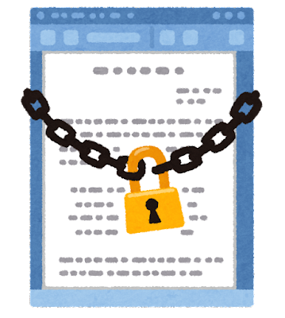

ランサムウェア(Ransomware)とは、「Ransom（身代金）」と「Software（ソフトウェア）」を組み合わせて作られた名称であり、コンピュータウィルスの一種である。ウィルスに感染するとパソコン内に保存しているデータを勝手に暗号化されて使えない状態になったり、スマートフォンが操作不能になったりしてしまう。また、感染した端末の中のファイルが暗号化されるのみではなく、その端末と接続された別のストレージも暗号化される場合もある。そして、その制限を解除するための身代金を要求する画面を表示させるというウイルスである。
2. フィッシングの対策
Point
Ⅰ. Web 金融機関では口座番号や暗証番号を電子メールで問い合わせないということ。

日本クレジット協会によると、クレジットカード会社や金融機関では、お客様のアカウント情報（ユーザID、パスワード等）、クレジットカード番号、暗証番号等について電子メールで問い合わせたり、 回答をお願いするようなことはない。もしそのような電子メールが受信された際は、決してURLなどを開かず、警察に通報してください。
Point
Ⅱ. Web ブラウザのアドレス欄の左端にある鍵のアイコンをクリックして表示される証明書から、アクセスしようとしている企業の Web サイトかを確認すること。

通常、インターネットバンキングへのログインやクレジットカード番号などの重要な情報の入力画面では、SSLという暗号化技術を利用します。重要な情報入力するWebページでは、SSLが採用されているかを毎回確認するようにしましょう。SSLで通信が行われていることは、WebブラウザのURL表示部分（アドレスバー）や運営組織名が緑色の表示になっているか、鍵マークが表示されているか、などで確認できます。重要な情報の入力を求めるページで、SSLが使用されていない場合は、まずはフィッシング詐欺を疑いましょう。
Point
Ⅲ.ダイレクトメッセージで送られてきたURLはクリックしないようにすること。
むやみに電子メールやSMSにリンクされたURLをクリックしないようにしてください。また、当該企業の公式WebサイトのURLと相違がないか必ず確認するようにしてください。